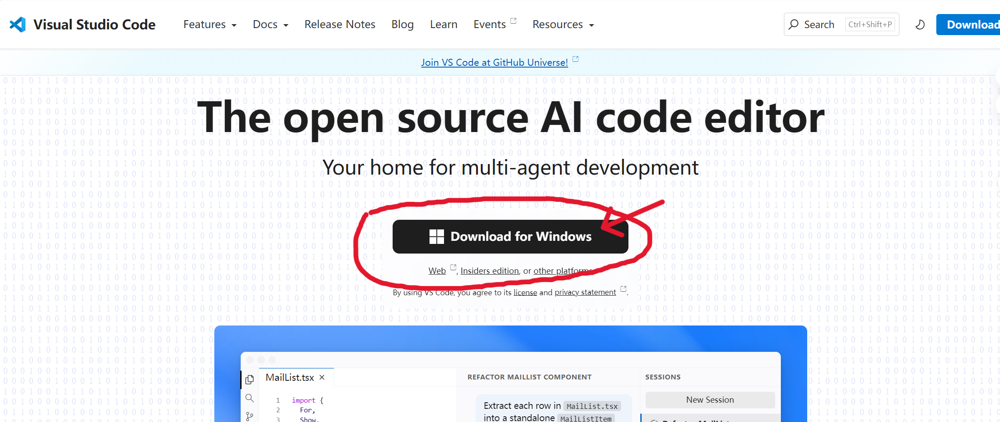
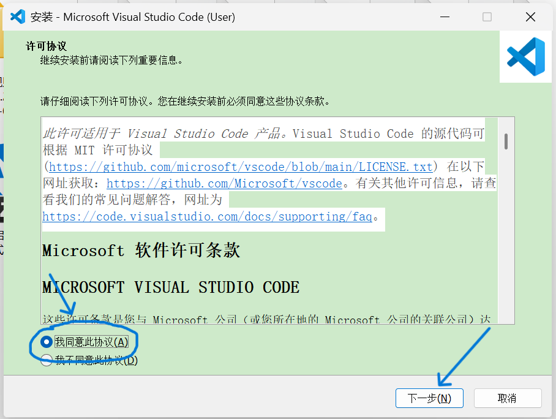
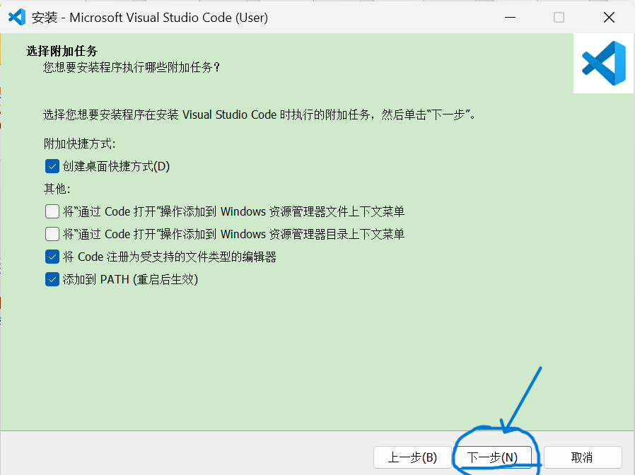
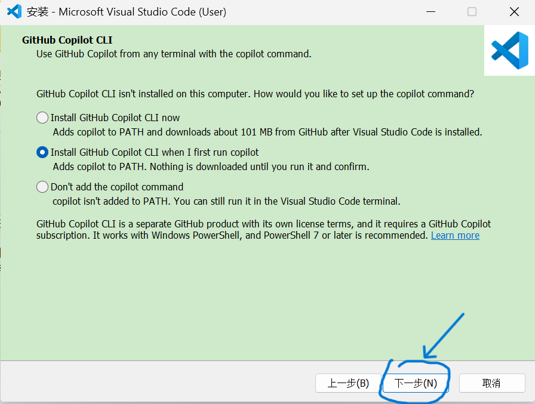
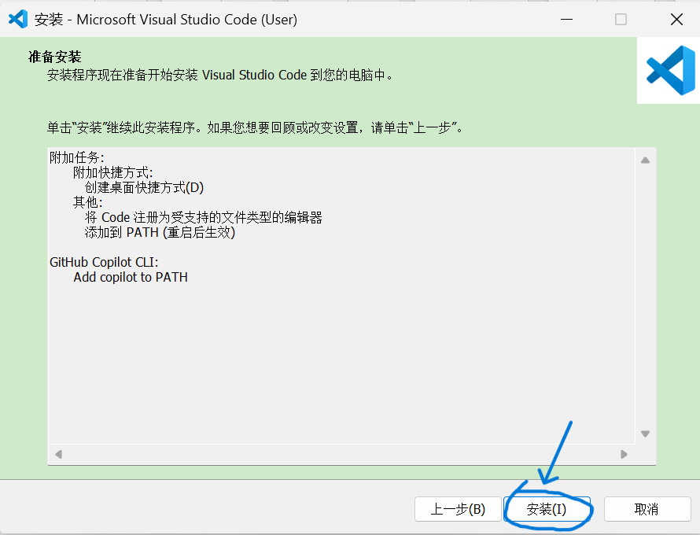
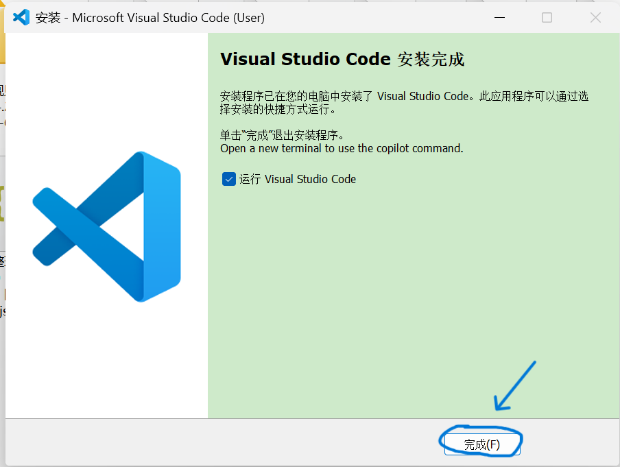
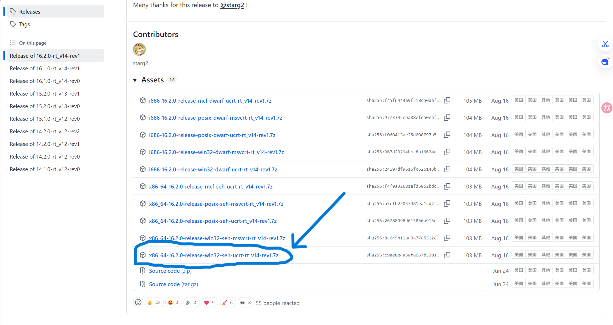
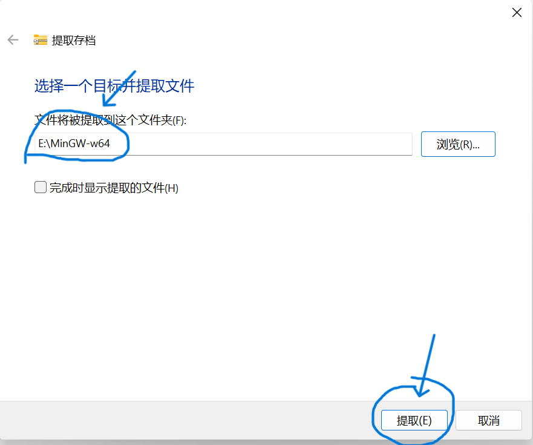
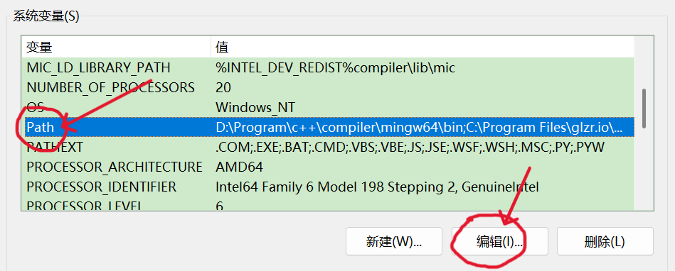
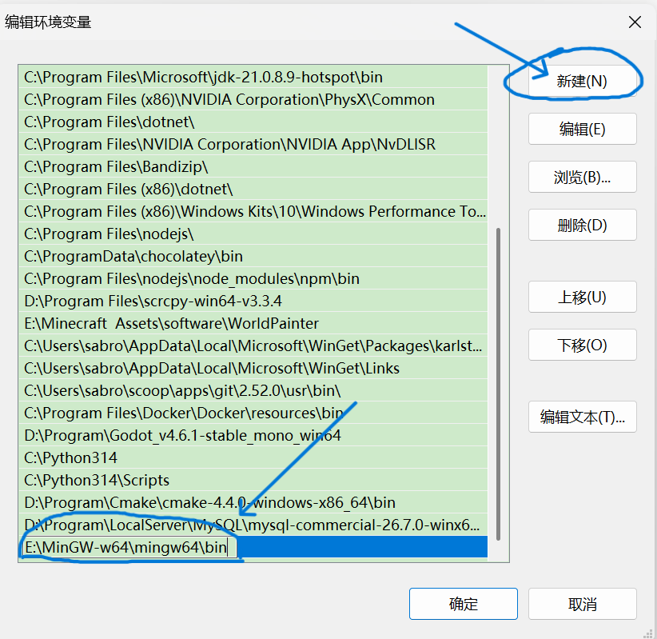

下载安装VScode并配置 C/C++ 环境
1. 下载VScode
从官网下载: https://code.visualstudio.com/

2. 安装VSCode
下载好后双击 VSCodeUserSetup-x64-1.143.1 运行





3. 配置环境
1. 为什么配置环境
写代码时，我们总得运行一下，看看结果是不是和预期一致，这时候就需要用到调试器（Debugger）了。配置的时候，我们不仅要指定好调试器，还得配好编译器。因为代码得先编译成能跑的 .exe 程序，调试器才能运行它，所以每次调试前都得先自动编译一遍。
常用编译器
| 编译器 | 平台 | 特点 |
|---|---|---|
| GCC | Linux / Windows / macOS | 开源、跨平台、Linux 默认编译器，优化能力强，社区生态最成熟 |
| Clang/LLVM | Linux / macOS / Windows | 编译速度快，错误提示更友好，macOS/iOS 默认编译器 |
| MSVC | Windows | 微软官方编译器，集成在 Visual Studio 中，Windows 桌面/游戏开发首选 |
| Intel C++ Compiler | Linux / Windows | 针对 Intel CPU 深度优化，适合高性能计算、科学计算 |
| TCC | Linux / Windows | 超轻量 C 编译器，编译极快，适合快速验证 C 代码，C++ 支持有限 |
常用调试器
| 调试器 | 平台 | 特点 |
|---|---|---|
| GDB | Linux / Windows / macOS | 最经典的命令行调试器，支持断点、单步、查看变量和调用栈 |
| LLDB | macOS / Linux / Windows | LLVM 生态调试器，现代 C++ 支持好，macOS 上默认使用 |
| Visual Studio Debugger | Windows | 图形化调试体验最好，适合新手；支持监视、内存窗口、数据断点 |
| WinDbg / CDB | Windows | Windows 底层调试工具，适合驱动、崩溃分析，命令行版为 CDB |
| Valgrind | Linux | 主要用于内存泄漏、非法内存访问检测，常配合 GDB 使用 |
2. MinGW-w64
MinGW-w64 就是 Windows 上的 GCC + GDB + Make + binutils 工具链，主要用来在 Windows 里编译出原生 .exe。 它本身不是 IDE，也不是单独的调试器。
下载
从GitHub下载: Releases · niXman/mingw-builds-binaries
注意: 这里需要魔法上网
下载类似这样的(别下载错了): x86_64-16.2.0-release-win32-seh-ucrt-rt_v14-rev1.7z

安装
下载完解压到一个合适路径的文件夹里,路径里别有中文

添加到环境变量
Windows设置 -> 系统 -> 关于 -> 高级系统设置


注意: 添加的路径是解压出的文件夹内的bin文件夹
3. launch.json
用VSCode打开一个目录,新建一个 .vscode 文件夹(如果没有).
在 .vscode 文件夹下新建 launch.json
{
// Use IntelliSense to learn about possible attributes.
// Hover to view descriptions of existing attributes.
// For more information, visit: https://go.microsoft.com/fwlink/?linkid=830387
"version": "0.2.0",
"configurations": [
{
"name": "(gdb) Launch", // 配置名称 在 VS Code 调试面板下拉菜单里显示的名字，可以随便取，比如 `"(gdb) 启动调试"`。
"type": "cppdbg", // 调试器类型 告诉 VS Code 用哪个调试适配器。`cppdbg` 表示 C/C++ 调试（底层用的是 Microsoft 的 `cppdbg` 适配器）。
"request": "launch", // 请求模式 "launch"：VS Code 帮你启动程序并调试（从 main 开始）。"attach"：附加到已经在运行的进程上。
"program": "enter program name, for example ${workspaceFolder}/a.exe", // 要调试的可执行文件路径 **这是必填项**，需要改成你编译出来的 `.exe` 路径。
"args": [], // 命令行参数
"stopAtEntry": false, // 是否在入口暂停 true：启动后停在 main 函数第一行，方便单步进入。false：直接运行到第一个断点。
"cwd": "${fileDirname}", // 程序运行时的当前工作目录。
"environment": [], // 环境变量
/*
可以给调试进程设置环境变量，比如：
"environment": [
{"name": "PATH", "value": "C:\\my_libs\\bin;${env:PATH}"},
{"name": "DEBUG_MODE", "value": "1"} ]
*/
"externalConsole": false, // 是否弹出外部控制台
"MIMode": "gdb", // 调试器模式 指定底层用的调试器协议。gdb 表示用 GDB 作为调试器。
"miDebuggerPath": "/path/to/gdb", // GDB 可执行文件路径 必须指向你电脑上 `gdb.exe` 的实际路径。比如:"C:\\MinGW\\bin\\gdb.exe", 如果已加入系统 PATH,可以直接写 "gdb"（VS Code 会去 PATH 里找）
"setupCommands": [ // 调试器初始化命令
{
"description": "Enable pretty-printing for gdb",
"text": "-enable-pretty-printing", // 启用 GDB 的"整齐打印"，让 STL 容器（vector、map）显示内容而不是只显示内存地址
"ignoreFailures": true // 表示命令失败不中断调试（容错）
},
{
"description": "Set Disassembly Flavor to Intel",
"text": "-gdb-set disassembly-flavor intel", // 反汇编窗口用 Intel 汇编语法（更直观，默认是 AT&T 语法）
"ignoreFailures": true
}
]
}
]
}| 变量 | 含义 |
|---|---|
${workspaceFolder} |
当前打开的工作区根目录 |
${file} |
当前激活的编辑器文件完整路径 |
${fileDirname} |
当前激活文件所在的目录 |
${workspaceFolder}/build/main.exe |
工作区根目录下的 build 文件夹里的 main.exe |
| 值 | 含义 |
|---|---|
${fileDirname} |
当前编辑文件所在的目录 |
${workspaceFolder} |
工作区根目录 |
| 绝对路径 | 固定目录 |
我们前面说过程序调试前要先编译成.exe可执行文件,用"preLaunchTask"来指定启动调试器前运行的任务-编译. 在"configurations"下新增:
"preLaunchTask": "C/C++: g++.exe build active file" // 必须和 `tasks.json` 里某个任务的 `"label"` 完全一致(别忘了加逗号)
样例
{
"version": "0.2.0",
"configurations": [
{
"name": "(gdb) Launch",
"type": "cppdbg",
"request": "launch",
"program": "${fileDirname}/build/${fileBasenameNoExtension}.exe",
"args": [],
"stopAtEntry": false,
"cwd": "${workspaceFolder}",
"environment": [],
"externalConsole": false,
"MIMode": "gdb",
"miDebuggerPath": "C:\\MinGW\\bin\\gdb.exe",
"setupCommands": [
{
"description": "Enable pretty-printing for gdb",
"text": "-enable-pretty-printing",
"ignoreFailures": true
},
{
"description": "Set Disassembly Flavor to Intel",
"text": "-gdb-set disassembly-flavor intel",
"ignoreFailures": true
}
] ,
"preLaunchTask": "C/C++: g++.exe build active file"
}
]
}4. tasks.json
在 .vscode 文件夹下新建 tasks.json
样例
{
"tasks": [
{
"type": "cppbuild", // 任务类型 VS Code 的 C/C++ 扩展会识别这个类型，提供更智能的提示和错误处理。也可以用 "shell" 类型（更通用）。
"label": "C/C++: g++.exe build active file", // 任务名称 如果要在 launch.json 里用 preLaunchTask，就必须一致
"command": "C:\\MinGW\\bin\\g++.exe",
"args": [ // 传给 g++ 的参数
"-fdiagnostics-color=always", // 编译错误/警告信息带颜色输出，方便在终端里看
"-g", // 生成调试信息，没有这个 GDB 无法断点和查看变量
"${file}", // 当前编辑器里打开的文件（完整路径）
"-o", // 指定输出文件名
"${fileDirname}\\build\\${fileBasenameNoExtension}.exe" // 输出到当前文件所在目录下的 build 文件夹，文件名和源文件同名
],
"options": { // 任务运行选项
"cwd": "${fileDirname}" // 设置任务执行时的工作目录为当前文件所在目录。这样 g++ 解析相对路径时，会以源文件所在目录为基准。
},
"problemMatcher": [ // 问题匹配器
"$gcc" //告诉 VS Code 如何解析 g++ 输出的编译错误/警告。$gcc 是内置匹配器，能识别 GCC/MinGW 的错误格式，解析后显示在 VS Code 的 "问题"面板 里，点击就能跳转到出错的那一行代码。
],
"group": { // 任务分组
"kind": "build", // 把这个任务归为"构建"类，可以在菜单"终端 → 运行构建任务"里找到。
"isDefault": true // 设为默认构建任务，按 Ctrl+Shift+B 就能直接运行这个任务，不需要手动选择。
},
"detail": "Task generated by Debugger." // 任务描述 在任务选择下拉菜单里显示的补充说明，不影响功能。
}
],
"version": "2.0.0"
}点击右上角 Debug C/C++ File 就自动编译运行了
至此 VSCode 配置 C/C++ 环境完成